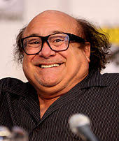
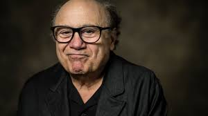
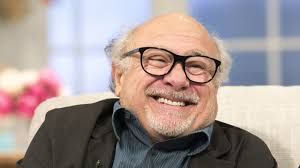
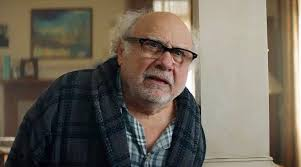

Danny Devito

About Danny
Daniel Michael DeVito Jr. (born November 17, 1944) is an American actor, director, producer, and screenwriter. He gained prominence for his portrayal of the taxi dispatcher Louie De Palma in the television series Taxi (1978–1983), which won him a Golden Globe Award and an Emmy Award. He plays Frank Reynolds on the FX and FXX sitcom It's Always Sunny in Philadelphia (2006–present).
Some Pictures



His Roles
- One Flew Over the Cuckoo's Nest (1975)
- Terms of Endearment (1983)
- Throw Momma from the Train (1987)
- Twins (1988)
- The War of the Roses (1989)
- Batman Returns (1992)
- Get Shorty (1995)
- Matilda (1996)
- Mars Attacks! (1996)
- L.A. Confidential (1997)
- Man on the Moon (1999)
- Wiener-Dog (2016)
- Dumbo (2019)
- Space Jam (1996)
- Hercules (1997)
- The Lorax (2012)
Videos of Danny
Danny DeVito Breaks Down His Most Iconic Characters
Danny DeVito on Always Sunny, Taxi & Danny DeVito Impressions
Danny DeVito Shares His Traumatic Couch Scene In 'Always Sunny'
Further Links
Danny Devitos Wikipedia Page